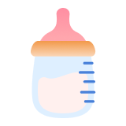
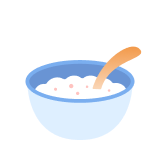
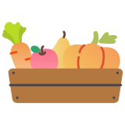
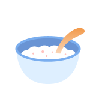
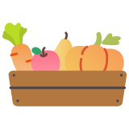

資訊來源：林口長庚醫院 廖俊凱 醫師
撰稿者：羅氏大藥廠 - Patient Journey Partner, Fred Huang
撰稿者：羅氏大藥廠 - Patient Journey Partner, Fred Huang
腸癌的患者需要進行手術時，可以取分成以下兩種目的。第一因為腫瘤過大或是無法立即切除，需要先以化療藥物進行治療。此時，醫師可能會在患者的鎖骨地方，手術將人工血管植入，以利後續施打化療藥物。因此，有植入人工血管的患者，應盡量減少大揮臂的動作，或是手提重物，減少因為動作而導致人關血管位移或是斷針的情形。
第二種情況則是，患者因為腫瘤生長導致腸阻塞，需要開刀將腫瘤移除，以維持患者的正常生活機能。目前腸道的手術傷口都不會太大，若於住院期間患者在傷口照護上，可以詢問專業的醫護人員進行協助。傷口癒合返家之後，初期應減少避免劇烈的運動，飲食方面應由流質飲食開始，在慢慢轉換成糜狀，再轉換成固態。避免術後立即吃太堅硬或難以消化的食物，造成腸道功能的負擔。

 



有些時候患者會需要進行造口的手術，有些暫時性的造口，目的則是希望讓患者治療期間，依舊可以維持正常的身體機能，增加體重恢復體力，讓患者盡快可以恢復進食。造口的護理上，建議應與院內的造口師進行討論，注意居家照顧時該注意的細節。
患者不論接受那一種手術，皆應維持良好的飲食習慣，並且適當的運動，增加自身的體力，才能已接受日後的藥物治療，也為抗癌的道路奠定下基礎。
M-TW-00002114
「本文章由羅氏大藥廠與醫護人員共同協作而成」
「本文章由羅氏大藥廠與醫護人員共同協作而成」